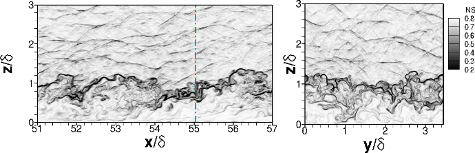

Public Access (formerly Langley Research Center)Turbulence Modeling Resource |
DNS: Supersonic/Hypersonic Zero-Pressure-Gradient Plate Flows
Return to: Data from DNS - Intro Page
Return to: Turbulence Modeling Resource Home PageThe data on this page were provided by L. Duan.
This DNS case is for 2-D supersonic/hypersonic turbulent
boundary layers in zero pressure gradient.
The DNS was run using an optimized seventh-order weighted essentially nonoscillatory
(WENO) scheme that allows eddy shocklets to be captured and ensures numerical
stability. No high enthalpy effects were included in the simulations.
Several different Mach numbers (ranging from 2.5 to 14) and wall-to-recovery temperatures (ranging from 0.18 to 1.0) are included.
Turbulent kinetic energy budget information is also available.
These DNS results have been documented in the following publication:

DNS data are provided below.
The fully-developed results are given as a function of z. Extensive README details are included at the top of each of the data files.
(Note all files were updated on 10/19/2018.)
Return to: Data from DNS - Intro Page
Recent significant updates:
10/19/2018 - updated reference, fixed Mach number values, updated all data files
Page Curators: Christopher Rumsey,
Ethan Vogel,
Clark Pederson
Last Updated: 03/28/2024